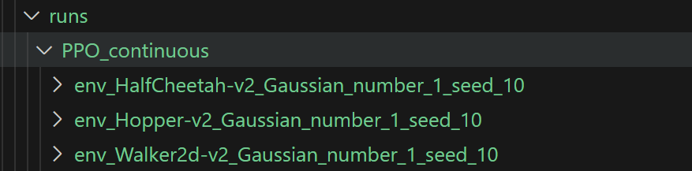
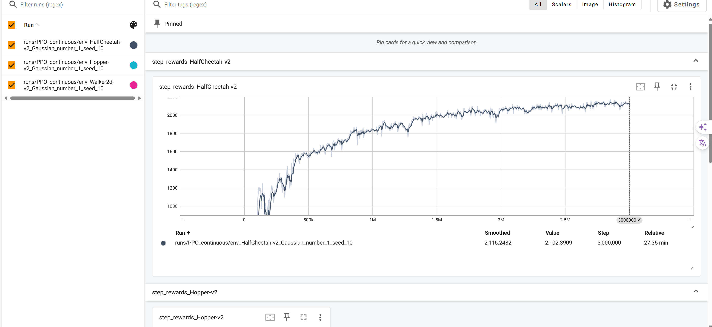
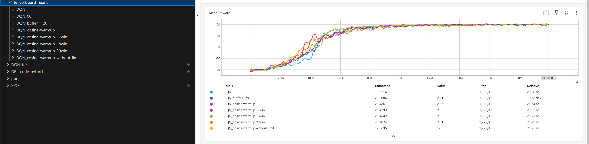

tensorboard
Tensorboard
详细的介绍和常见报错可以参考
导入库
tensorboard是tensorflow的可视化工具，可以用来查看模型的训练过程，模型结构，模型参数等。
但是现在pytorch也支持tensorboard了，在处理loss,acc等数据的时候，可以使用tensorboard来可视化。
使用方法
1 | # 生成一个writer对象，并指定生成图片的目录，其中logs为指定生成事件的目录 |
运行代码之后会生成一个指定名字的目录，并且会包含一个事件在里面，这个事件要用tensorboard打开。
一个例子
1 | # Build a tensorboard |
注意,我们需要一个清晰的分类目录,这样避免了重名,也方便查找。
1 | writer.add_scalar('step_rewards_{}'.format(env_name), evaluate_rewards[-1], global_step=total_steps) |


两个例子
1 | # tensorboard |
1 | if i % print_interval == 0: |

保存在同一个大文件下不同的小文件夹再统一开启tensorboard可以看到不同的训练过程和训练数据。
All articles in this blog are licensed under CC BY-NC-SA 4.0 unless stating additionally.